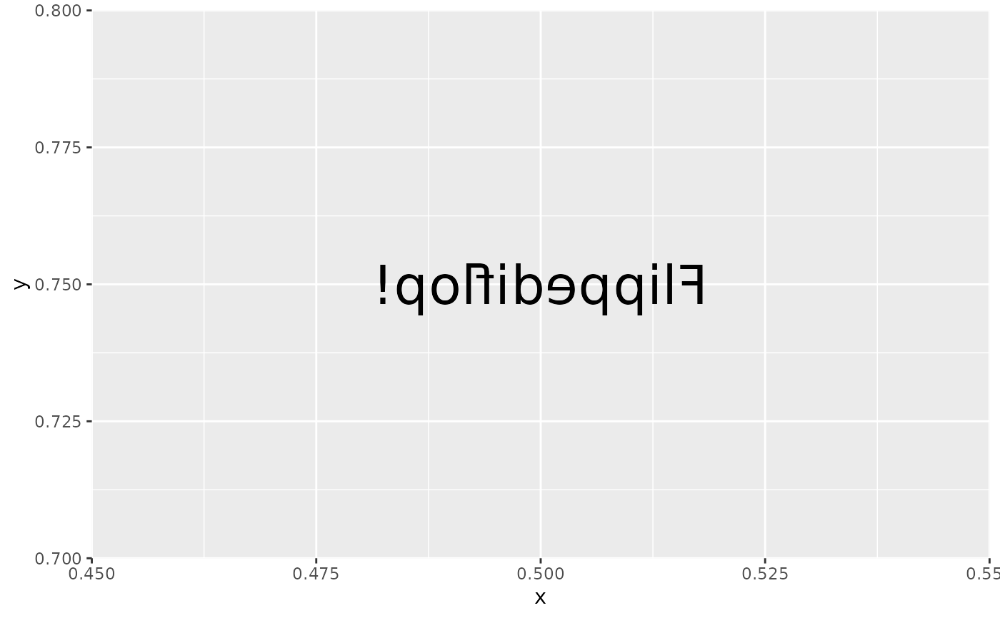

These utility functions can help when creating custom filters (using
with_custom()) as they can provide information about the current rendering
context.
viewport_location()
index_raster(raster, cols, rows)
get_raster_area(raster, xmin, ymin, xmax, ymax)
set_raster_area(raster, value, xmin, ymin)
get_viewport_area(raster)
set_viewport_area(raster, value)
viewport_is_clipping()
current_resolution()
to_pixels(x, y_axis = FALSE, location = FALSE)
from_pixels(x)A raster or nativeRaster object
Column and row indices
Boundaries of the area in pixels. 0,0 is the top-left corner
An object of the same type as raster
A numeric or unit object
is the unit pertaining to the y-axis? Defaults to FALSE (i.e.
it is measured on the x-axis)
is the unit encoding a location? Defaults to FALSE (i.e. it
is encoding a dimension). Pixel locations are encoded based on a top-left
starting point, as opposed to grid's bottom-left coordinate system. This
means that y-axis locations will flip around when converted to pixels.
Depends on the function - see details.
viewport_location(): Returns the bounding box defining the current
viewport in pixels in the order xmin, ymin, xmax, ymax
index_raster(): Is a version of the classic [,] indexing that is aware
of the row-major order of rasters
get_raster_area(): Extracts an area of a raster based on a bounding box
set_raster_area(): Sets an area of a raster to a new raster value
get_viewport_area(): A version of get_raster_area() that specifically
extract the area defined by the current viewport
set_viewport_area(): A version of set_raster_area() that specifically
sets the area defined by the current viewport
viewport_is_clipping(): Returns TRUE if the current viewport has
clipping turned on
current_resolution(): Returns the resolution of the active device in ppi
(pixels-per-inch)
to_pixels(x): Converts x to pixels if x is given as a unit object. It
is assumed that x encodes a dimension and not a location. If x is a
numeric it is assumed to already be in pixels
from_pixels: Converts a numeric giving some pixel dimension to a unit
object.
# These functions are intended to be used inside filter functions, e.g.
library(ggplot2)
flip_raster <- function(raster, horizontal = TRUE) {
# Get the viewport area of the raster
vp <- get_viewport_area(raster)
# Get the columns and rows of the raster - reverse order depending on
# the value of horizontal
dims <- dim(vp)
rows <- seq_len(dims[1])
cols <- seq_len(dims[2])
if (horizontal) {
cols <- rev(cols)
} else {
rows <- rev(rows)
}
# change the order of columns or rows in the viewport raster
vp <- index_raster(vp, cols, rows)
# Assign the modified viewport back
set_viewport_area(raster, vp)
}
ggplot() +
with_custom(
geom_text(aes(0.5, 0.75, label = 'Flippediflop!'), size = 10),
filter = flip_raster,
horizontal = TRUE
)
